IMC data analysis workflow
Tess and Tural
University of Bern, DBMR, Visceral and Transplantation Surgery lab
Last updated: 2023-03-21
Checks: 5 2
Knit directory: 221201_workflowr_haibin/
This reproducible R Markdown analysis was created with workflowr (version 1.7.0). The Checks tab describes the reproducibility checks that were applied when the results were created. The Past versions tab lists the development history.
Great! Since the R Markdown file has been committed to the Git repository, you know the exact version of the code that produced these results.
Great job! The global environment was empty. Objects defined in the global environment can affect the analysis in your R Markdown file in unknown ways. For reproduciblity it’s best to always run the code in an empty environment.
The command set.seed(20221201) was run prior to running
the code in the R Markdown file. Setting a seed ensures that any results
that rely on randomness, e.g. subsampling or permutations, are
reproducible.
Great job! Recording the operating system, R version, and package versions is critical for reproducibility.
- barplot_patientID_count
- barplot_patientID_percentage
- barplot_sampleID
- boxplots
- CATALST_setup
- celltype by annotation
- celltype by condition
- celltype by patientID
- celltype by ROI
- celltype overlay UMAP
- checkmetadata
- filterdata
- heatmap_cellsaggreg_minmax
- heatmap_cellsaggregated
- IMCA cell types heatmap singlecell
- load-libs
- load data
- MDS_plot_ann
- MDS_plot_celltype
- MDS_plot_celltype_condition
- MDS_plot_celltype_sampleID
- MDS_plot_sampleID_1
- MDS_plot_sampleID_2
- metadata
- save spe3
- scatterplot
- session-info-chunk-inserted-by-workflowr
- set colors
- target overlay UMAP
- UMAP target exprs
- unnamed-chunk-1
- violinplot_expression
To ensure reproducibility of the results, delete the cache directory
3_dim_red_cache and re-run the analysis. To have workflowr
automatically delete the cache directory prior to building the file, set
delete_cache = TRUE when running wflow_build()
or wflow_publish().
Using absolute paths to the files within your workflowr project makes it difficult for you and others to run your code on a different machine. Change the absolute path(s) below to the suggested relative path(s) to make your code more reproducible.
| absolute | relative |
|---|---|
| C:/Users/IMC Platform laptop/Users2/Tess/SteinbockCellSegmentation/221130_haibin/221201_workflowr_haibin | . |
Great! You are using Git for version control. Tracking code development and connecting the code version to the results is critical for reproducibility.
The results in this page were generated with repository version 75a88a8. See the Past versions tab to see a history of the changes made to the R Markdown and HTML files.
Note that you need to be careful to ensure that all relevant files for
the analysis have been committed to Git prior to generating the results
(you can use wflow_publish or
wflow_git_commit). workflowr only checks the R Markdown
file, but you know if there are other scripts or data files that it
depends on. Below is the status of the Git repository when the results
were generated:
Ignored files:
Ignored: .Rhistory
Ignored: .Rproj.user/
Ignored: analysis/0_prep_data_cache/
Ignored: analysis/1_QC_mask_cache/
Ignored: analysis/2_IMCA_cell_annotation_cache/
Ignored: analysis/3_dim_red_cache/
Ignored: analysis/4_img_vis_cache/
Ignored: analysis/5_spatial_vis_cache/
Ignored: analysis/6_statistics_cache/
Untracked files:
Untracked: Umap_target_overlay.pdf
Untracked: Umap_target_overlay.png
Untracked: allchannels_multidimplot.pdf
Untracked: data/images.csv
Untracked: data/images.rds
Untracked: data/img/
Untracked: data/intensities/
Untracked: data/masks.rds
Untracked: data/masks/
Untracked: data/neighbors/
Untracked: data/panel.csv
Untracked: data/raw/
Untracked: data/regionprops/
Untracked: data/sample_metadata.xlsx
Untracked: data/sample_metadata_shortened.xlsx
Untracked: output/lung_rffit.rds
Untracked: output/lung_rffit_v2.rds
Untracked: output/spe0.rds
Untracked: output/spe1.rds
Untracked: output/spe1_imca.rds
Untracked: output/spe3.rds
Untracked: output/spe4.rds
Untracked: output/spe5.rds
Untracked: output/spe_ca.rds
Untracked: output/spe_ca_v2.rds
Untracked: output/spe_ca_v2_dr.rds
Untracked: umap_metadata.png
Untracked: umap_target.png
Unstaged changes:
Modified: analysis/_site.yml
Note that any generated files, e.g. HTML, png, CSS, etc., are not included in this status report because it is ok for generated content to have uncommitted changes.
These are the previous versions of the repository in which changes were
made to the R Markdown (analysis/3_dim_red.Rmd) and HTML
(docs/3_dim_red.html) files. If you’ve configured a remote
Git repository (see ?wflow_git_remote), click on the
hyperlinks in the table below to view the files as they were in that
past version.
| File | Version | Author | Date | Message |
|---|---|---|---|---|
| Rmd | 75a88a8 | tessbrodie | 2023-03-21 | Publish the initial files for myproject |
Dimensionality reduction
Load packages
library(SpatialExperiment)
library(Rphenograph)
library(igraph)
library(dittoSeq)
library(viridis)
library(bluster)
library(BiocParallel)
library(ggplot2)
library(scran)
library(CATALYST)
library(kohonen)
library(ConsensusClusterPlus)
library(patchwork)
library(pheatmap)
library(gridExtra)
library(cytomapper)
library(Rphenoannoy)
library(SingleCellExperiment)
library(caret)
library(ggridges)
library(openxlsx)
library(stringr)
library(imcRtools)
library(cytomapper)
library(SpatialExperiment)
library(cytomapper)
library(scater)
library(patchwork)
library(cowplot)
library(viridis)
library(scuttle)
library(CATALYST)
library(ComplexHeatmap)
library(circlize)
library(tidyverse)
library(gtools)
library(RColorBrewer)
library(scuttle)Load data
spe <- readRDS(file.path("output", "spe_ca_v2_dr.rds"))
# Sample cells
#cur_cells <- sample(seq_len(ncol(spe)), 2000)Add metadata
#Metadata table loading
meta <- read.xlsx("./data/sample_metadata_shortened.xlsx")
# Set patient ID and ROI and condition names
spe$patient_id <- meta$patient_id[match(spe$sample_id, meta$sample_id)]
spe$patient_id <- factor(spe$patient_id)
#Factor ordering the ROI IDs for better plotting
spe$ROI <- meta$ROI[match(spe$sample_id, meta$sample_id)]
spe$ROI <- factor(spe$ROI, levels = mixedsort(unique(spe$ROI)))
spe$condition <- meta$condition[match(spe$sample_id, meta$sample_id)]
spe$annotation <- meta$annotation[match(spe$sample_id, meta$sample_id)]
spe@metadata$meta_final <- metaCheck 2 - metadata
unique(spe$patient_id)[1] 9 7 8 5 4 3 2 1 6
Levels: 1 2 3 4 5 6 7 8 9unique(spe$ROI) [1] 51 41 42 52 53 54 46 47 48 49 50 26 27 28 29 30 21 22 23
[20] 24 25 16 17 18 19 20 11 12 13 14 15 6 7 8 9_2 9_1 10 1
[39] 2 3 4 5 44 45 36 37 38 39 40 31 32 33 34 43 35
55 Levels: 1 2 3 4 5 6 7 8 9_1 9_2 10 11 12 13 14 15 16 17 18 19 20 21 ... 54unique(spe$condition)[1] "KO" "WT"unique(spe$annotation)[1] "M" "S" "L"Dimensionality reduction: annotated cells
dittoDimPlot(spe,
var = "celltype",
reduction.use = "UMAP",
size = 0.2,
do.label = TRUE) +
ggtitle("IMCA annotated cell types overlaid on UMAP")Warning: ggrepel: 2 unlabeled data points (too many overlaps). Consider
increasing max.overlaps
#Celltype UMAP split by condition
#Sample 10% of the dataset
spe_small <- spe[, sample(ncol(spe), round(ncol(spe)/10))]
p1 <- dittoDimPlot(spe_small,
var = "celltype",
split.by = "condition",
reduction.use = "UMAP",
size = 0.6,
do.label = FALSE)
p2 <-dittoBarPlot(spe, var = "celltype", group.by = "condition")
p3 <-dittoBarPlot(spe, var = "condition", group.by = "celltype")
plot_grid(p1, p2, p3,
ncol = 1)
#Celltype UMAP split by annotation
p1 <-dittoDimPlot(spe_small,
var = "celltype",
split.by = "annotation",
reduction.use = "UMAP",
size = 0.6,
do.label = FALSE)
p2 <-dittoBarPlot(spe, var = "celltype", group.by = "annotation")
p3 <-dittoBarPlot(spe, var = "annotation", group.by = "celltype")
plot_grid(p1, p2, p3,
ncol = 1)
#Celltype UMAP split by patient ID
p1 <-dittoDimPlot(spe_small,
var = "celltype",
split.by = "donor_id",
reduction.use = "UMAP",
size = 0.6,
do.label = FALSE)
p2 <-dittoBarPlot(spe, var = "celltype", group.by = "donor_id")
p3 <-dittoBarPlot(spe, var = "donor_id", group.by = "celltype")
plot_grid(p1, p2, p3,
ncol = 1)
#Celltype UMAP split by ROI
p1 <-dittoDimPlot(spe_small,
var = "celltype",
split.by = "ROI",
reduction.use = "UMAP",
size = 0.6,
do.label = FALSE)
p2 <-dittoBarPlot(spe, var = "celltype",
group.by = "ROI",
x.reorder = mixedorder(metaLevels("ROI", spe)))
p3 <-dittoBarPlot(spe, var = "ROI", group.by = "celltype")
plot_grid(p1, p2, p3,
ncol = 1)
Target expression UMAPs
# Define markers
markers <- c("E-cadherin", "Arginase-1", "CD19", "CD3e", "Pan-actin", "CD206", "HNFa", "a-SMA", "CD8a", "CD4", "CD11b", "Ly6-G", "CD31", "F4_80", "Ki-67", "CD44", "CD74")
#Multiple marker plots
plot_list <- multi_dittoDimPlot(spe_small,
var = markers,
assay = "exprs",
reduction.use = "UMAP",
list.out = TRUE,
size = 0.2)
plot_list <- lapply(plot_list, function(x) x + scale_color_viridis())Scale for 'colour' is already present. Adding another scale for 'colour',
which will replace the existing scale.
Scale for 'colour' is already present. Adding another scale for 'colour',
which will replace the existing scale.
Scale for 'colour' is already present. Adding another scale for 'colour',
which will replace the existing scale.
Scale for 'colour' is already present. Adding another scale for 'colour',
which will replace the existing scale.
Scale for 'colour' is already present. Adding another scale for 'colour',
which will replace the existing scale.
Scale for 'colour' is already present. Adding another scale for 'colour',
which will replace the existing scale.
Scale for 'colour' is already present. Adding another scale for 'colour',
which will replace the existing scale.
Scale for 'colour' is already present. Adding another scale for 'colour',
which will replace the existing scale.
Scale for 'colour' is already present. Adding another scale for 'colour',
which will replace the existing scale.
Scale for 'colour' is already present. Adding another scale for 'colour',
which will replace the existing scale.
Scale for 'colour' is already present. Adding another scale for 'colour',
which will replace the existing scale.
Scale for 'colour' is already present. Adding another scale for 'colour',
which will replace the existing scale.
Scale for 'colour' is already present. Adding another scale for 'colour',
which will replace the existing scale.
Scale for 'colour' is already present. Adding another scale for 'colour',
which will replace the existing scale.
Scale for 'colour' is already present. Adding another scale for 'colour',
which will replace the existing scale.
Scale for 'colour' is already present. Adding another scale for 'colour',
which will replace the existing scale.
Scale for 'colour' is already present. Adding another scale for 'colour',
which will replace the existing scale.plot_grid(plotlist = plot_list)
Single target plots
Get rid of useless channels
#Exclude unwanted channels
rowData(spe)$use_channel <- grepl("a-SMA|CD19|HNFa|CD11b|F4_80|CD44|CD3e|E-cadherin|Ly6-G|CD206|Arginase-1|CD4|CD74|CD8a|Ki-67|CD31|Pan-actin|HistoneH3|DNA1|DNA2", rownames(spe))Define colors
color_vectors <- list()
#For the ROI
ROI <- setNames(dittoColors(reps = 1)[seq_along(unique(spe$sample_id))],
unique(spe$ROI))
#For the patient ID
patient_id <- setNames(brewer.pal(length(unique(spe$patient_id)), name = "Set1"),
unique(spe$patient_id))
#For the sample ID
sample_id <- setNames(dittoColors(reps = 1)[seq_along(unique(spe$sample_id))],
unique(spe$sample_id))
#For the condition
condition <- setNames(brewer.pal(length(unique(spe$condition)), name = "Set2"),
unique(spe$condition))Warning in brewer.pal(length(unique(spe$condition)), name = "Set2"): minimal value for n is 3, returning requested palette with 3 different levels#For the annotation
annotation <- setNames(brewer.pal(length(unique(spe$annotation)), name = "Set3"),
unique(spe$annotation))
#For cell type
annotation <- setNames(brewer.pal(length(unique(spe$annotation)), name = "Set3"),
unique(spe$annotation))
color_vectors$ROI <- ROI
color_vectors$patient_id <- patient_id
color_vectors$sample_id <- sample_id
color_vectors$condition <- condition
color_vectors$annotation <- annotation
metadata(spe)$color_vectors <- color_vectorsHeatmap visualization
# Sample cells
cur_cells <- sample(seq_len(ncol(spe)), 40000)
dittoHeatmap(spe[, cur_cells],
genes = rowData(spe)$use_channel,
assay = "exprs", scale = "none",
heatmap.colors = viridis(100),
annot.by = c("celltype", "condition", "annotation", "patient_id"),
annot.colors = c(dittoColors(1)[1:length(unique(spe$celltype))], metadata(spe)$color_vectors$condition, metadata(spe)$color_vectors$annotation, metadata(spe)$color_vectors$patient_id))
# Define type markers
type_markers <- c("E-cadherin", "Arginase-1", "CD19", "CD3e", "Pan-actin", "CD206", "HNFa", "a-SMA", "CD8a", "CD4", "CD11b", "Ly6-G", "CD31", "F4_80", "Ki-67", "CD44", "CD74")
state_markers <- c("HistoneH3", "DNA1")
# Add to spe
rowData(spe)$marker_class <- ifelse(rownames(spe) %in% type_markers, "type",
ifelse(rownames(spe) %in% state_markers, "state",
"other"))
## by cell type
celltype_mean <- aggregateAcrossCells(as(spe, "SingleCellExperiment"),
ids = spe$celltype,
statistics = "mean",
use.assay.type = "exprs",
subset.row = rownames(spe)[rowData(spe)$marker_class == "type"]
)
# No scaling
dittoHeatmap(celltype_mean,
assay = "exprs", cluster_cols = TRUE,
scale = "none",
heatmap.colors = viridis(100),
annot.by = c("celltype","ncells"))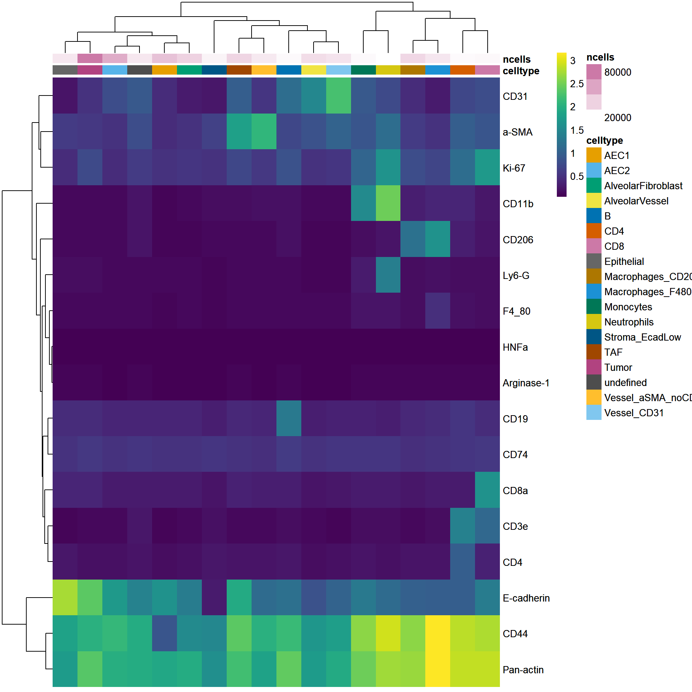
annotation_colors = list(celltype = metadata(spe)$color_vectors$celltype,
ncells = plasma(100))# Min-max expression scaling
dittoHeatmap(celltype_mean,
assay = "exprs", cluster_cols = TRUE,
scaled.to.max = TRUE,
heatmap.colors.max.scaled = inferno(100),
annot.by = c("celltype","ncells"))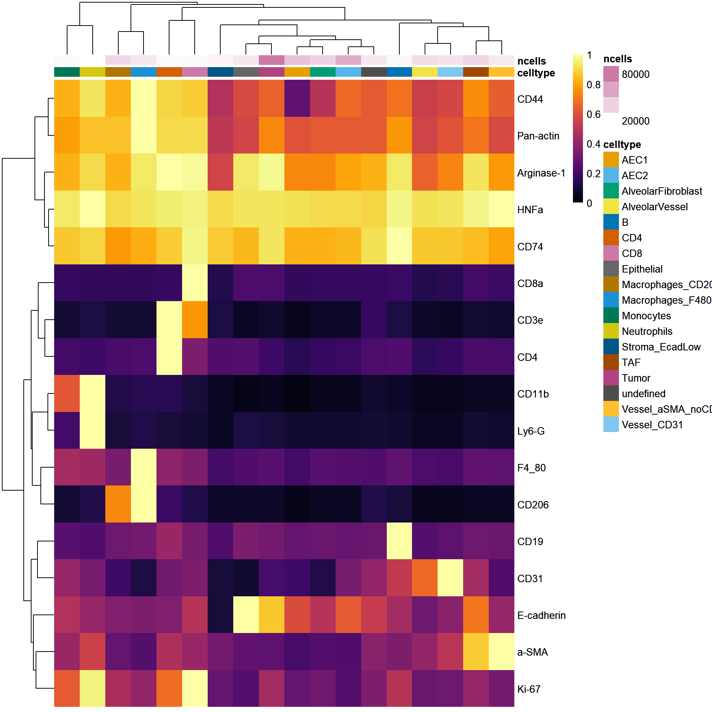
annotation_colors = list(celltype = metadata(spe)$color_vectors$celltype,
ncells = plasma(100))Violin plot visualization
#Violin Plot - plotExpression
plotExpression(spe[,cur_cells],
features = rownames(spe)[rowData(spe)$marker_class == "type"],
x = "celltype", exprs_values = "exprs",
colour_by = "celltype") +
theme(axis.text.x = element_text(angle = 90))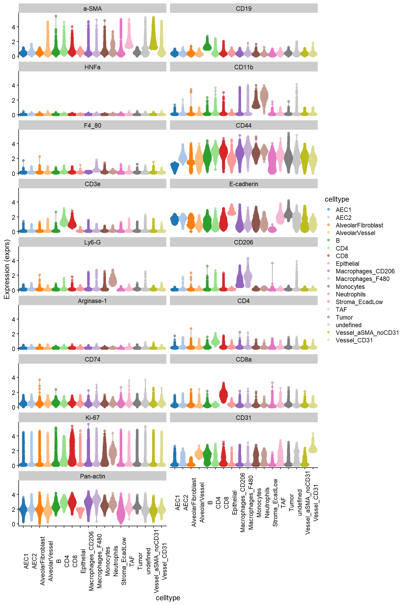
scale_color_manual(values = metadata(spe)$color_vectors$celltype)<ggproto object: Class ScaleDiscrete, Scale, gg>
aesthetics: colour
axis_order: function
break_info: function
break_positions: function
breaks: waiver
call: call
clone: function
dimension: function
drop: TRUE
expand: waiver
get_breaks: function
get_breaks_minor: function
get_labels: function
get_limits: function
guide: legend
is_discrete: function
is_empty: function
labels: waiver
limits: NULL
make_sec_title: function
make_title: function
map: function
map_df: function
n.breaks.cache: NULL
na.translate: TRUE
na.value: grey50
name: waiver
palette: function
palette.cache: NULL
position: left
range: <ggproto object: Class RangeDiscrete, Range, gg>
range: NULL
reset: function
train: function
super: <ggproto object: Class RangeDiscrete, Range, gg>
rescale: function
reset: function
scale_name: manual
train: function
train_df: function
transform: function
transform_df: function
super: <ggproto object: Class ScaleDiscrete, Scale, gg>Scatter plot visualization
#Scatter plot
dittoScatterPlot(spe,
x.var = "CD3e", y.var="CD19",
assay.x = "exprs", assay.y = "exprs",
color.var = "celltype") +
#scale_color_manual(values = metadata(spe)$color_vectors$celltype) +
ggtitle("Scatterplot for CD3/CD20 labelled by celltype")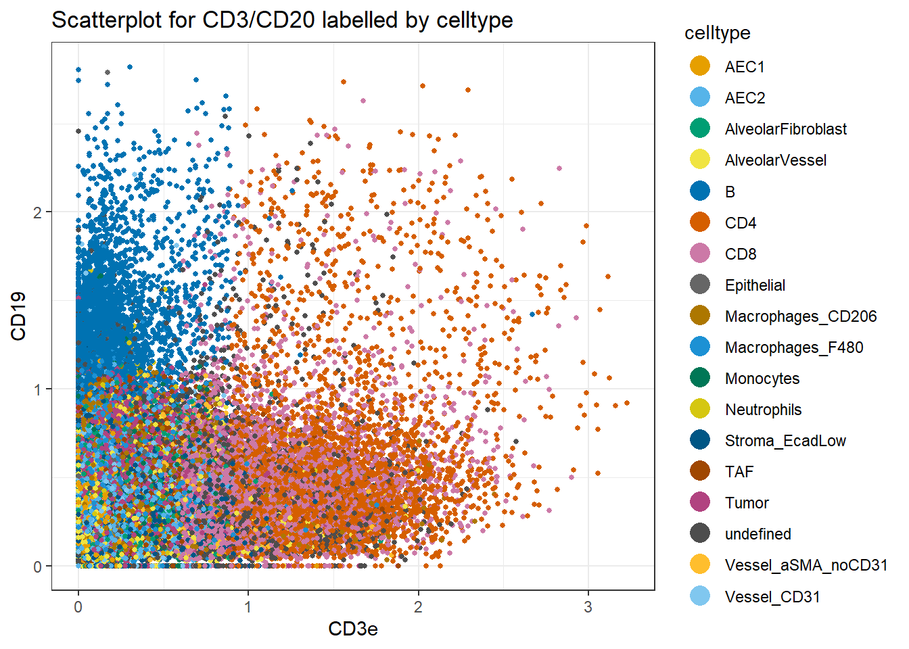
Barplot visualization
# by sample_id
dittoBarPlot(spe, var = "celltype", group.by = "ROI") 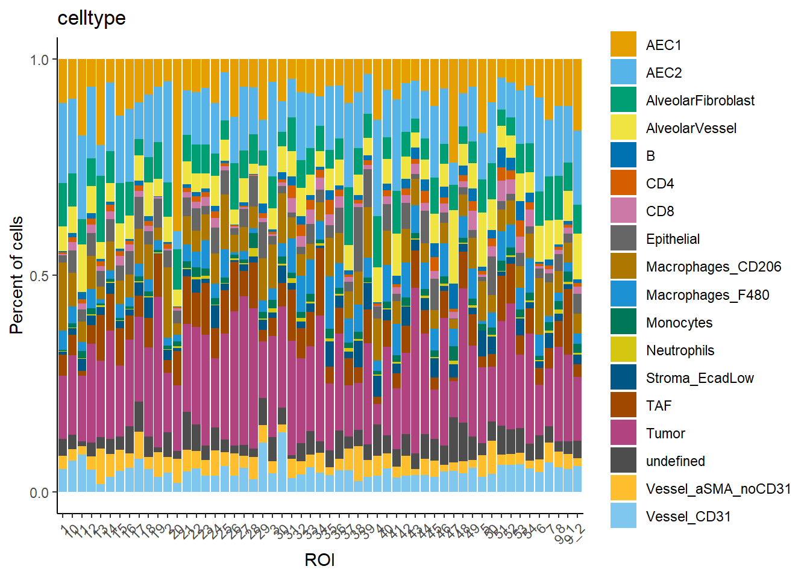
scale_fill_manual(values = metadata(spe)$color_vectors$celltype)<ggproto object: Class ScaleDiscrete, Scale, gg>
aesthetics: fill
axis_order: function
break_info: function
break_positions: function
breaks: waiver
call: call
clone: function
dimension: function
drop: TRUE
expand: waiver
get_breaks: function
get_breaks_minor: function
get_labels: function
get_limits: function
guide: legend
is_discrete: function
is_empty: function
labels: waiver
limits: NULL
make_sec_title: function
make_title: function
map: function
map_df: function
n.breaks.cache: NULL
na.translate: TRUE
na.value: grey50
name: waiver
palette: function
palette.cache: NULL
position: left
range: <ggproto object: Class RangeDiscrete, Range, gg>
range: NULL
reset: function
train: function
super: <ggproto object: Class RangeDiscrete, Range, gg>
rescale: function
reset: function
scale_name: manual
train: function
train_df: function
transform: function
transform_df: function
super: <ggproto object: Class ScaleDiscrete, Scale, gg># by patient_id - percentage
dittoBarPlot(spe, var = "celltype", group.by = "patient_id") 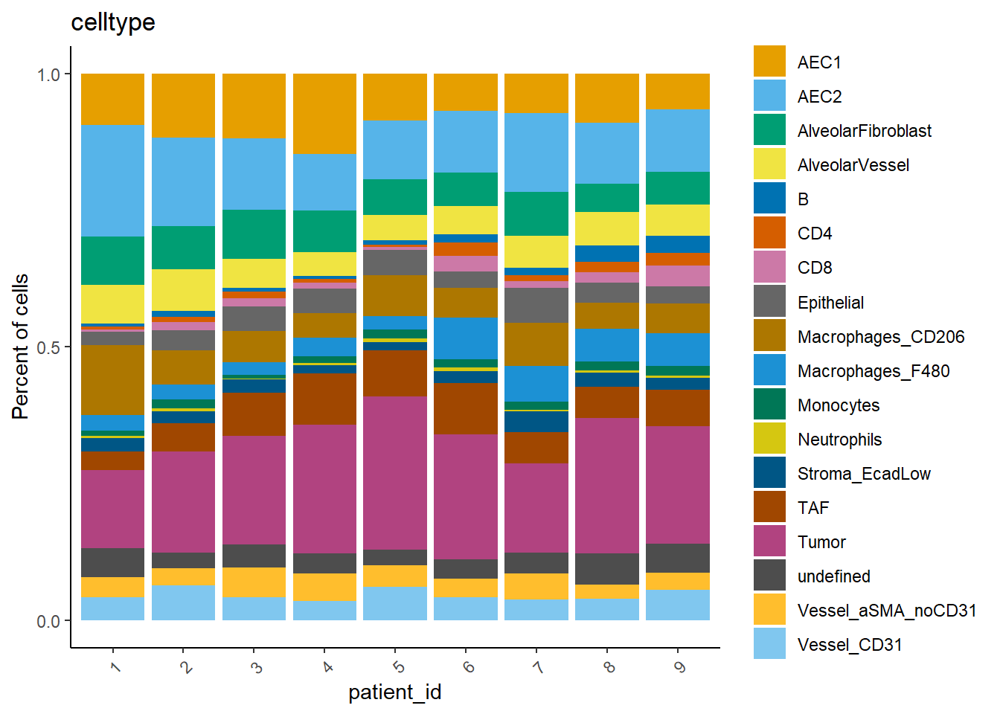
scale_fill_manual(values = metadata(spe)$color_vectors$celltype)<ggproto object: Class ScaleDiscrete, Scale, gg>
aesthetics: fill
axis_order: function
break_info: function
break_positions: function
breaks: waiver
call: call
clone: function
dimension: function
drop: TRUE
expand: waiver
get_breaks: function
get_breaks_minor: function
get_labels: function
get_limits: function
guide: legend
is_discrete: function
is_empty: function
labels: waiver
limits: NULL
make_sec_title: function
make_title: function
map: function
map_df: function
n.breaks.cache: NULL
na.translate: TRUE
na.value: grey50
name: waiver
palette: function
palette.cache: NULL
position: left
range: <ggproto object: Class RangeDiscrete, Range, gg>
range: NULL
reset: function
train: function
super: <ggproto object: Class RangeDiscrete, Range, gg>
rescale: function
reset: function
scale_name: manual
train: function
train_df: function
transform: function
transform_df: function
super: <ggproto object: Class ScaleDiscrete, Scale, gg># by patient_id - count
dittoBarPlot(spe, scale = "count", var = "celltype", group.by = "patient_id") 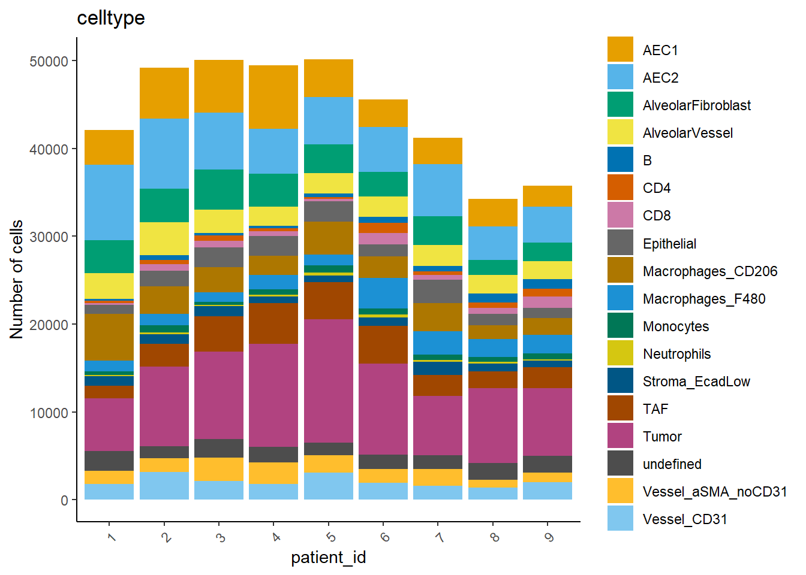
scale_fill_manual(values = metadata(spe)$color_vectors$celltype)<ggproto object: Class ScaleDiscrete, Scale, gg>
aesthetics: fill
axis_order: function
break_info: function
break_positions: function
breaks: waiver
call: call
clone: function
dimension: function
drop: TRUE
expand: waiver
get_breaks: function
get_breaks_minor: function
get_labels: function
get_limits: function
guide: legend
is_discrete: function
is_empty: function
labels: waiver
limits: NULL
make_sec_title: function
make_title: function
map: function
map_df: function
n.breaks.cache: NULL
na.translate: TRUE
na.value: grey50
name: waiver
palette: function
palette.cache: NULL
position: left
range: <ggproto object: Class RangeDiscrete, Range, gg>
range: NULL
reset: function
train: function
super: <ggproto object: Class RangeDiscrete, Range, gg>
rescale: function
reset: function
scale_name: manual
train: function
train_df: function
transform: function
transform_df: function
super: <ggproto object: Class ScaleDiscrete, Scale, gg>CATALYST Pseudobulk-level MDS plots
# save spe in CATALYST-compatible object with renamed colData entries and
# new metadata information
spe_cat <- spe
spe_cat$sample_id <- factor(spe$sample_id)
spe_cat$condition <- factor(spe$condition)
spe_cat$cluster_id <- factor(spe$celltype)
spe_cat$annotation <- factor(spe$annotation)
#add celltype information to metadata
metadata(spe_cat)$cluster_codes <- data.frame(celltype = factor(spe_cat$celltype))# MDS pseudobulk by cell type
pbMDS(spe_cat, by = "cluster_id",
features = rownames(spe_cat)[rowData(spe_cat)$marker_class == "type"],
label_by = "cluster_id", k = "celltype") Warning: ggrepel: 1 unlabeled data points (too many overlaps). Consider
increasing max.overlaps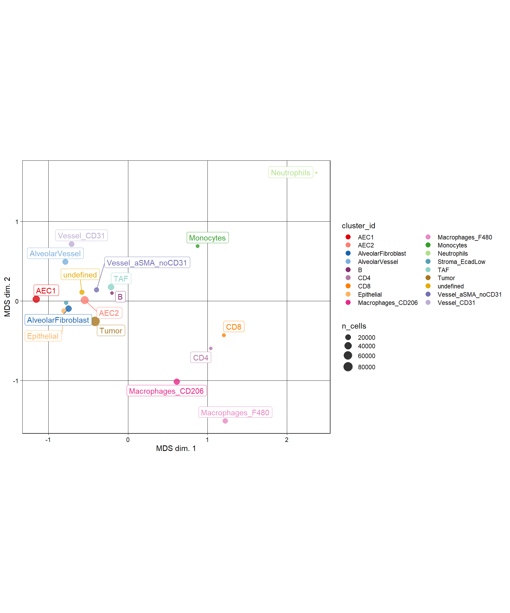
scale_color_manual(values = metadata(spe_cat)$color_vectors$celltype)<ggproto object: Class ScaleDiscrete, Scale, gg>
aesthetics: colour
axis_order: function
break_info: function
break_positions: function
breaks: waiver
call: call
clone: function
dimension: function
drop: TRUE
expand: waiver
get_breaks: function
get_breaks_minor: function
get_labels: function
get_limits: function
guide: legend
is_discrete: function
is_empty: function
labels: waiver
limits: NULL
make_sec_title: function
make_title: function
map: function
map_df: function
n.breaks.cache: NULL
na.translate: TRUE
na.value: grey50
name: waiver
palette: function
palette.cache: NULL
position: left
range: <ggproto object: Class RangeDiscrete, Range, gg>
range: NULL
reset: function
train: function
super: <ggproto object: Class RangeDiscrete, Range, gg>
rescale: function
reset: function
scale_name: manual
train: function
train_df: function
transform: function
transform_df: function
super: <ggproto object: Class ScaleDiscrete, Scale, gg># MDS pseudobulk by cell type and sample_id
pbMDS(spe_cat, by = "both",
features = rownames(spe_cat)[rowData(spe_cat)$marker_class == "type"],
k = "celltype", shape_by = "condition",
size_by = TRUE) 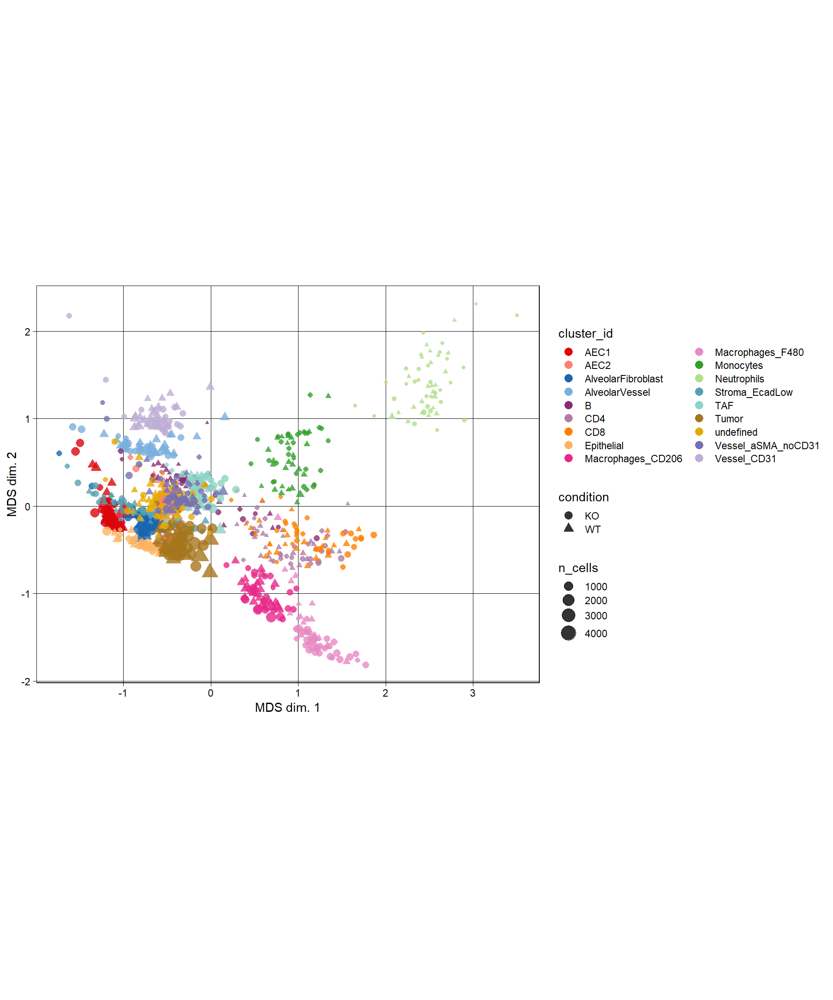
scale_color_manual(values = metadata(spe_cat)$color_vectors$celltype)<ggproto object: Class ScaleDiscrete, Scale, gg>
aesthetics: colour
axis_order: function
break_info: function
break_positions: function
breaks: waiver
call: call
clone: function
dimension: function
drop: TRUE
expand: waiver
get_breaks: function
get_breaks_minor: function
get_labels: function
get_limits: function
guide: legend
is_discrete: function
is_empty: function
labels: waiver
limits: NULL
make_sec_title: function
make_title: function
map: function
map_df: function
n.breaks.cache: NULL
na.translate: TRUE
na.value: grey50
name: waiver
palette: function
palette.cache: NULL
position: left
range: <ggproto object: Class RangeDiscrete, Range, gg>
range: NULL
reset: function
train: function
super: <ggproto object: Class RangeDiscrete, Range, gg>
rescale: function
reset: function
scale_name: manual
train: function
train_df: function
transform: function
transform_df: function
super: <ggproto object: Class ScaleDiscrete, Scale, gg># MDS pseudobulk by ann
pbMDS(spe_cat, by = "sample_id",
color_by = "annotation",
features = rownames(spe_cat)[rowData(spe_cat)$marker_class == "type"]) Warning: ggrepel: 12 unlabeled data points (too many overlaps). Consider
increasing max.overlaps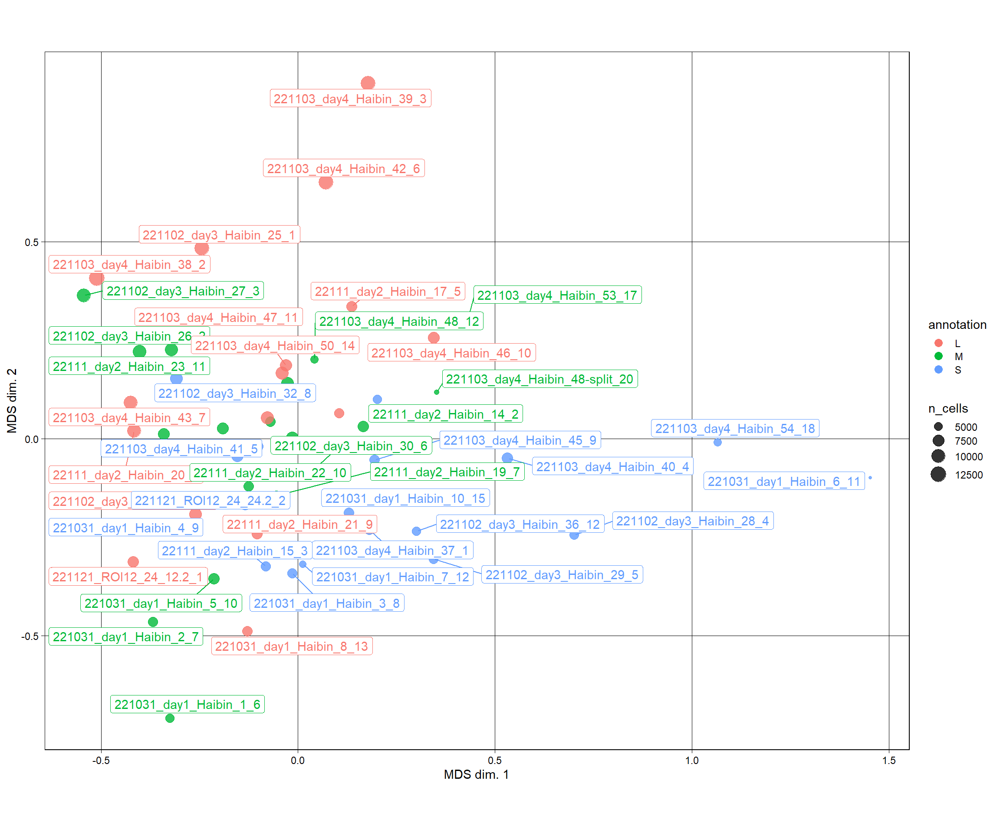
scale_color_manual(values = metadata(spe_cat)$color_vectors$ROI)<ggproto object: Class ScaleDiscrete, Scale, gg>
aesthetics: colour
axis_order: function
break_info: function
break_positions: function
breaks: waiver
call: call
clone: function
dimension: function
drop: TRUE
expand: waiver
get_breaks: function
get_breaks_minor: function
get_labels: function
get_limits: function
guide: legend
is_discrete: function
is_empty: function
labels: waiver
limits: 51 41 42 52 53 54 46 47 48 49 50 26 27 28 29 30 21 22 23 ...
make_sec_title: function
make_title: function
map: function
map_df: function
n.breaks.cache: NULL
na.translate: TRUE
na.value: grey50
name: waiver
palette: function
palette.cache: NULL
position: left
range: <ggproto object: Class RangeDiscrete, Range, gg>
range: NULL
reset: function
train: function
super: <ggproto object: Class RangeDiscrete, Range, gg>
rescale: function
reset: function
scale_name: manual
train: function
train_df: function
transform: function
transform_df: function
super: <ggproto object: Class ScaleDiscrete, Scale, gg>Pseudobulk expression boxplot
plotPbExprs(spe_cat, k = "celltype",
facet_by = "cluster_id", ncol = 4,
features = rownames(spe_cat)[rowData(spe_cat)$marker_class == "type"]) 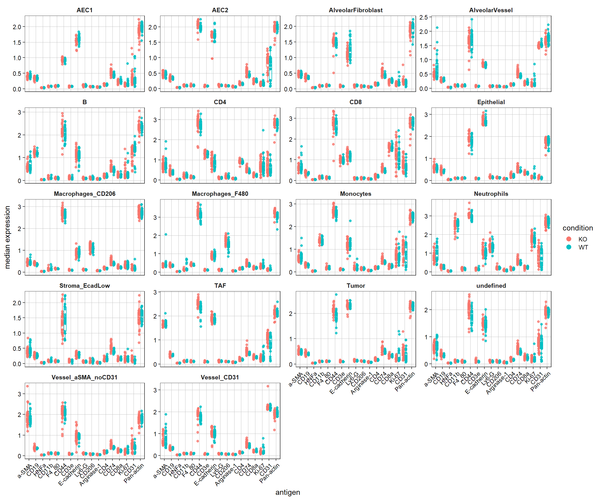
scale_color_manual(values = metadata(spe_cat)$color_vectors$indication)<ggproto object: Class ScaleDiscrete, Scale, gg>
aesthetics: colour
axis_order: function
break_info: function
break_positions: function
breaks: waiver
call: call
clone: function
dimension: function
drop: TRUE
expand: waiver
get_breaks: function
get_breaks_minor: function
get_labels: function
get_limits: function
guide: legend
is_discrete: function
is_empty: function
labels: waiver
limits: NULL
make_sec_title: function
make_title: function
map: function
map_df: function
n.breaks.cache: NULL
na.translate: TRUE
na.value: grey50
name: waiver
palette: function
palette.cache: NULL
position: left
range: <ggproto object: Class RangeDiscrete, Range, gg>
range: NULL
reset: function
train: function
super: <ggproto object: Class RangeDiscrete, Range, gg>
rescale: function
reset: function
scale_name: manual
train: function
train_df: function
transform: function
transform_df: function
super: <ggproto object: Class ScaleDiscrete, Scale, gg>Save data
saveRDS(spe, file.path("output", "spe3.rds"))
sessionInfo()R version 4.2.1 (2022-06-23 ucrt)
Platform: x86_64-w64-mingw32/x64 (64-bit)
Running under: Windows 10 x64 (build 19044)
Matrix products: default
locale:
[1] LC_COLLATE=English_Switzerland.utf8 LC_CTYPE=English_Switzerland.utf8
[3] LC_MONETARY=English_Switzerland.utf8 LC_NUMERIC=C
[5] LC_TIME=English_Switzerland.utf8
attached base packages:
[1] grid stats4 stats graphics grDevices utils datasets
[8] methods base
other attached packages:
[1] RColorBrewer_1.1-3 gtools_3.9.3
[3] forcats_0.5.2 dplyr_1.0.9
[5] purrr_0.3.4 readr_2.1.2
[7] tidyr_1.2.0 tibble_3.1.7
[9] tidyverse_1.3.2 circlize_0.4.15
[11] ComplexHeatmap_2.12.1 cowplot_1.1.1
[13] scater_1.24.0 imcRtools_1.3.7
[15] stringr_1.4.1 openxlsx_4.2.5
[17] ggridges_0.5.3 caret_6.0-93
[19] lattice_0.20-45 Rphenoannoy_0.1.0
[21] Matrix_1.4-1 cytomapper_1.8.0
[23] EBImage_4.38.0 gridExtra_2.3
[25] pheatmap_1.0.12 patchwork_1.1.2
[27] ConsensusClusterPlus_1.60.0 kohonen_3.0.11
[29] CATALYST_1.20.1 scran_1.24.0
[31] scuttle_1.6.2 BiocParallel_1.30.3
[33] bluster_1.6.0 viridis_0.6.2
[35] viridisLite_0.4.1 dittoSeq_1.8.1
[37] Rphenograph_0.99.1 igraph_1.3.4
[39] ggplot2_3.3.6 SpatialExperiment_1.6.0
[41] SingleCellExperiment_1.18.0 SummarizedExperiment_1.26.1
[43] Biobase_2.56.0 GenomicRanges_1.48.0
[45] GenomeInfoDb_1.32.2 IRanges_2.30.0
[47] S4Vectors_0.34.0 BiocGenerics_0.42.0
[49] MatrixGenerics_1.8.1 matrixStats_0.62.0
[51] workflowr_1.7.0
loaded via a namespace (and not attached):
[1] rsvd_1.0.5 svglite_2.1.0
[3] class_7.3-20 fftwtools_0.9-11
[5] ps_1.7.1 foreach_1.5.2
[7] rprojroot_2.0.3 crayon_1.5.1
[9] MASS_7.3-58 rhdf5filters_1.8.0
[11] nlme_3.1-158 backports_1.4.1
[13] reprex_2.0.2 rlang_1.0.4
[15] readxl_1.4.1 XVector_0.36.0
[17] irlba_2.3.5 callr_3.7.2
[19] limma_3.52.2 rjson_0.2.21
[21] bit64_4.0.5 glue_1.6.2
[23] parallel_4.2.1 processx_3.7.0
[25] vipor_0.4.5 classInt_0.4-7
[27] shinydashboard_0.7.2 haven_2.5.1
[29] tidyselect_1.1.2 distances_0.1.8
[31] XML_3.99-0.10 zoo_1.8-10
[33] sf_1.0-8 ggpubr_0.4.0
[35] nnls_1.4 xtable_1.8-4
[37] magrittr_2.0.3 evaluate_0.16
[39] cli_3.3.0 zlibbioc_1.42.0
[41] rstudioapi_0.14 sp_1.5-0
[43] whisker_0.4 bslib_0.4.0
[45] rpart_4.1.16 shiny_1.7.2
[47] BiocSingular_1.12.0 xfun_0.31
[49] clue_0.3-61 cluster_2.1.3
[51] tidygraph_1.2.1 ggrepel_0.9.1
[53] listenv_0.8.0 png_0.1-7
[55] future_1.28.0 ipred_0.9-13
[57] withr_2.5.0 bitops_1.0-7
[59] aws.signature_0.6.0 ggforce_0.3.3
[61] cellranger_1.1.0 RBGL_1.72.0
[63] plyr_1.8.7 ncdfFlow_2.42.1
[65] RTriangle_1.6-0.10 hardhat_1.2.0
[67] e1071_1.7-11 dqrng_0.3.0
[69] pROC_1.18.0 pillar_1.8.1
[71] RcppParallel_5.1.5 GlobalOptions_0.1.2
[73] cachem_1.0.6 multcomp_1.4-20
[75] fs_1.5.2 CytoML_2.8.0
[77] raster_3.5-21 GetoptLong_1.0.5
[79] DelayedMatrixStats_1.18.0 vctrs_0.4.1
[81] ellipsis_0.3.2 generics_0.1.3
[83] lava_1.6.10 tools_4.2.1
[85] beeswarm_0.4.0 munsell_0.5.0
[87] tweenr_1.0.2 proxy_0.4-27
[89] aws.s3_0.3.21 DelayedArray_0.22.0
[91] fastmap_1.1.0 compiler_4.2.1
[93] abind_1.4-5 httpuv_1.6.5
[95] GenomeInfoDbData_1.2.8 prodlim_2019.11.13
[97] edgeR_3.38.1 ggnewscale_0.4.7
[99] ggpointdensity_0.1.0 deldir_1.0-6
[101] utf8_1.2.2 later_1.3.0
[103] recipes_1.0.1 jsonlite_1.8.0
[105] concaveman_1.1.0 scales_1.2.1
[107] graph_1.74.0 ScaledMatrix_1.4.0
[109] carData_3.0-5 sparseMatrixStats_1.8.0
[111] promises_1.2.0.1 car_3.1-0
[113] doParallel_1.0.17 latticeExtra_0.6-30
[115] R.utils_2.12.0 rmarkdown_2.16
[117] sandwich_3.0-2 statmod_1.4.37
[119] Rtsne_0.16 HDF5Array_1.24.1
[121] survival_3.3-1 yaml_2.3.5
[123] plotrix_3.8-2 systemfonts_1.0.4
[125] cytolib_2.8.0 flowWorkspace_4.8.0
[127] htmltools_0.5.3 locfit_1.5-9.6
[129] graphlayouts_0.8.0 digest_0.6.29
[131] assertthat_0.2.1 mime_0.12
[133] tiff_0.1-11 units_0.8-0
[135] future.apply_1.9.1 data.table_1.14.2
[137] R.oo_1.25.0 flowCore_2.8.0
[139] drc_3.0-1 labeling_0.4.2
[141] splines_4.2.1 Rhdf5lib_1.18.2
[143] googledrive_2.0.0 RCurl_1.98-1.7
[145] broom_1.0.1 hms_1.1.2
[147] modelr_0.1.9 rhdf5_2.40.0
[149] colorspace_2.0-3 DropletUtils_1.16.0
[151] base64enc_0.1-3 ggbeeswarm_0.6.0
[153] shape_1.4.6 nnet_7.3-17
[155] sass_0.4.2 Rcpp_1.0.9
[157] RANN_2.6.1 mvtnorm_1.1-3
[159] FlowSOM_2.4.0 RProtoBufLib_2.8.0
[161] fansi_1.0.3 tzdb_0.3.0
[163] parallelly_1.32.1 ModelMetrics_1.2.2.2
[165] R6_2.5.1 lifecycle_1.0.1
[167] zip_2.2.1 googlesheets4_1.0.1
[169] curl_4.3.2 ggsignif_0.6.3
[171] jquerylib_0.1.4 TH.data_1.1-1
[173] iterators_1.0.14 gower_1.0.0
[175] svgPanZoom_0.3.4 htmlwidgets_1.5.4
[177] beachmat_2.12.0 polyclip_1.10-0
[179] terra_1.5-34 rvest_1.0.3
[181] globals_0.16.1 codetools_0.2-18
[183] lubridate_1.8.0 metapod_1.4.0
[185] getPass_0.2-2 dbplyr_2.2.1
[187] R.methodsS3_1.8.2 gtable_0.3.1
[189] DBI_1.1.3 git2r_0.30.1
[191] KernSmooth_2.23-20 httr_1.4.4
[193] highr_0.9 vroom_1.5.7
[195] stringi_1.7.8 reshape2_1.4.4
[197] farver_2.1.1 hexbin_1.28.2
[199] Rgraphviz_2.40.0 magick_2.7.3
[201] timeDate_4021.104 DT_0.24
[203] xml2_1.3.3 colorRamps_2.3.1
[205] ggcyto_1.24.1 BiocNeighbors_1.14.0
[207] interp_1.1-3 scattermore_0.8
[209] bit_4.0.4 jpeg_0.1-9
[211] ggraph_2.0.5 gargle_1.2.1
[213] pkgconfig_2.0.3 rstatix_0.7.0
[215] knitr_1.40